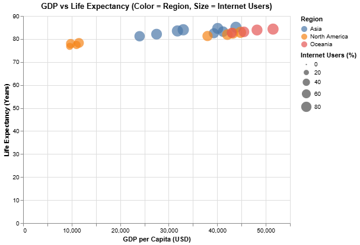
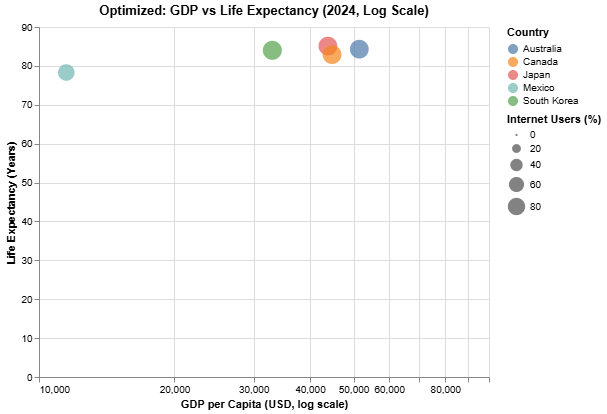

GDP vs Life Expectancy
This scatter plot uses GDP per capita and life expectancy, with color showing region and size showing internet usage. It compares economic strength and health outcomes.
Optimized Scatter (2024, Log Scale)
This optimized scatter only uses data from 2024 and applies a log scale to GDP, helping compare countries with very different incomes.